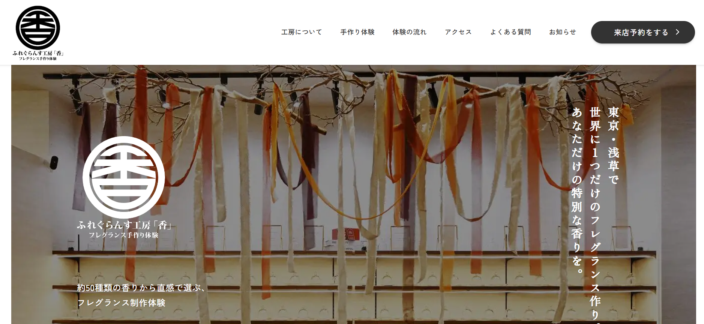
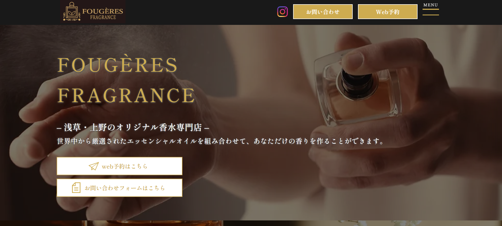
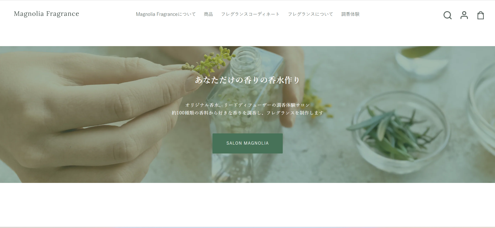

マーケットリサーチ
3C分析
香り結び - Kaori Musubi - のターゲット顧客は、浅草観光を楽しむ20代〜40代の国内外の旅行者である。写真撮影や買い物だけではない日本らしい体験を求めており、自分だけの香りを作ることで旅の思い出を形に残したいというニーズを持つ。また、観光中に短時間で内容を理解し、そのまま予約したいと考えるため、分かりやすい情報設計と予約導線が重要である。市場では、インバウンド需要の回復やコト消費の拡大により、地域ならではの体験型サービスへの関心が高まっている。
代表的な競合サービスとしては、ふれぐらんす工房「香」、FOUGÈRES FRAGRANCE、Magnolia Fragrance が挙げられる。ふれぐらんす工房「香」は浅草での香り体験、FOUGÈRES FRAGRANCE は本格的で高級感のある調香体験、Magnolia Fragrance は豊富なメニューを持つ都市型サロンとして強みを持つ。これらに対し、香り結び - Kaori Musubi - は、浅草という観光地との結びつき、日本文化を感じられる体験価値、そして分かりやすく予約しやすい導線設計によって差別化できる。
香り結び - Kaori Musubi - は、浅草観光を楽しむ旅行者に向けて、日本らしい感性とものづくりの魅力を感じられる香りづくり体験を提供するサービスである。自社の強みは、浅草という立地との親和性、香り・日本文化・旅の思い出を結びつけた世界観、そして予約まで迷わない導線設計にある。活用できるリソースとしては、観光地としての立地、和モダンなブランド価値、Webサイトや予約管理機能が挙げられる。一方で、現状ではブランドの魅力が予約行動に十分結びついておらず、観光客向けの即決しやすい情報設計が課題である。
SWOT分析
| プラス要因 | マイナス要因 | |
|---|---|---|
| 内部環境 |
Strengths（強み）
浅草という好立地 |
Weaknesses（弱み）
予約導線が弱い |
| 外部環境 |
Opportunities（機会）
インバウンド回復 |
Threats（脅威）
競合ワークショップの存在 |
STP分析
1. 地理的変数
・浅草など東京都内の主要観光地を訪れる旅行者
・都市部で体験型アクティビティを探している層
・訪日外国人が多く集まる観光エリアの来訪者
2. 人口統計的変数
・20代〜40代の男女
・会社員、学生、自由業、旅行中の観光客
・体験や旅行にお金を使える中程度以上の可処分所得層
3.
心理的変数
・モノよりコトを重視し、思い出に残る体験を求める層
・日本文化や和モダン、ものづくりに魅力を感じる層
・自分だけのオリジナル感や特別感を重視する層
4.
行動変数
・旅行中に1回完結で参加できる体験を探す層
・短時間で参加しやすく、予約しやすい体験を求める層
・完成品だけでなく、制作過程そのものも思い出として持ち帰りたい層
1.
浅草観光中の20代〜40代の国内旅行者
・市場規模：中規模
・選定理由：浅草は国内観光客の来訪が多く、観光の合間に参加できる単発体験の需要が見込まれるため
・ニーズ：日本らしく記憶に残る体験、分かりやすい料金や所要時間、迷わず予約できる導線
2.
特別感のある日本文化体験を求める国内外の観光客
・市場規模：中〜大規模
・選定理由：インバウンド需要の回復とコト消費の拡大により、浅草ならではの体験価値への関心が高まっているため
・ニーズ：自分だけの香りを作る特別感、日本文化を感じられる世界観、短時間で理解して予約できる安心感
1. 競合サービスとの差別化軸
・浅草らしい日本文化体験の強さ
・観光客でも迷わない予約のしやすさ
2. ポジショニングマップ上での位置
・横軸：予約のしやすさ・分かりやすさ
・縦軸：地域性・日本文化体験の強さ
・香り結び - Kaori Musubi
- は「右上」に位置づけられる
3.
そのポジションを取る理由
・浅草観光と結びついた体験価値を持っているため
・日本文化、ものづくり、旅の思い出を結びつけて訴求できるため
・予約まで迷わない導線設計を強みにできるため
4P / 4C 分析
| 4P（売り手視点） | 内容 | 4C（買い手視点） | 内容 |
|---|---|---|---|
| 1. Product （製品） |
・浅草で日本文化を感じながら体験できる香りづくりワークショップ ・自分だけの香りを作れるオリジナル体験 ・体験内容、所要時間、料金、予約方法まで分かりやすく整理したサービス設計 |
1. Customer Value （顧客価値） |
・写真を撮るだけではない、日本らしく記憶に残る体験ができる ・世界に一つだけの香りを作る特別感を得られる ・内容を理解しやすく、安心して予約できる価値がある |
| 2. Price （価格） |
・観光中でも参加しやすい、納得感のある体験価格を設定する ・料金、所要時間、体験内容を事前に明確に提示する ・価格だけでなく、旅の思い出としての体験価値も含めて訴求する |
2. Cost （顧客コスト） |
・顧客が負担するのは料金だけでなく、時間や予約の手間も含まれる ・所要時間や内容が分かりにくいと、心理的負担が大きくなる ・価格に見合う特別感や満足感があることで、参加しやすくなる |
| 3. Place （流通） |
・浅草という観光地で、観光の途中に立ち寄りやすい立地を活かす ・Webサイトをワークショップ専用の受け皿ページとして設計する ・トップ、SNS、地図、観光導線から予約ページへつながる構成にする |
3. Convenience （利便性） |
・観光中の短い時間でも内容を把握しやすい ・体験内容から予約完了まで迷わず進める ・アクセス情報や予約方法が分かりやすく、利用しやすい |
| 4. Promotion （販促） |
・香り、浅草、日本文化、ものづくりを一貫した世界観で訴求する ・写真や完成イメージ、体験の流れを見せて魅力を伝える ・観光客や訪日客にも伝わりやすい情報発信を行う |
4. Communication （対話） |
・顧客が知りたい体験内容、料金、所要時間、予約方法を分かりやすく伝える ・FAQや案内ページを通じて不安や疑問を解消する ・一方的に売るのではなく、安心して参加を決められるコミュニケーションを重視する |
競合サイト分析

サイト名：ふれぐらんす工房「香」
URL：fragrance-koubou-kaori.com
スクリーンショット分析
・トップ画面でロゴ、メニュー、予約ボタンが整理されており、必要な情報にすぐアクセスしやすい構成になっている。
・大きなメインビジュアルと縦書きのキャッチコピーによって、和の雰囲気と特別感が強く伝わる。
・全体的にシンプルで見やすく、香り体験サービスとしての高級感や落ち着いた印象を与えている。
サイトの第一印象
・浅草で楽しめる香り体験サイトであることが分かりやすい。
・「世界に1つだけのフレグランス作り」という特別感が伝わりやすい。
・予約につなげる意識が強いサイトだと感じる。
良い点（デザイン・機能・コンテンツ）
・写真が多く、店内の雰囲気や体験内容をイメージしやすい。
・体験の流れ、FAQ、アクセスなど、利用前に知りたい情報が整理されている。
・予約ボタンが分かりやすく配置されており、行動につながりやすい。
改善できそうな点
・情報量がやや多く、全体的に縦長で読み疲れしやすい。
・料金やコースの違いを、もっと一覧で比較しやすくすると分かりやすい。
・予約が外部サイト遷移のため、少し分断感がある。
自分のサイトに取り入れたい要素
・ファーストビューで体験の魅力を一言で伝える構成。
・目立つ予約ボタンによる分かりやすい導線。
・体験の流れを段階的に見せる分かりやすさ。
・写真やFAQを使って不安を減らす工夫。

サイト名：FOUGÈRES FRAGRANCE（フジェールフレグランス）
URL：fougeres-fragrance.jp
スクリーンショット分析
・黒とゴールドを基調としたデザインで、高級感と上質なブランドイメージが強く伝わる。
・ファーストビューに大きな商品写真とブランド名が配置されており、香水専門店であることがすぐに分かる。
・「Web予約」や「お問い合わせ」ボタンが目立つ位置にあり、予約や問い合わせへ進みやすい構成になっている。
サイトの第一印象
・全体的に高級感があり、大人向けの落ち着いた印象を受ける。
・オリジナル香水作りを体験できる専門店であることが分かりやすい。
・特別感のある香り体験を提供しているサイトだと感じる。
良い点（デザイン・機能・コンテンツ）
・色使いや写真に統一感があり、ブランドの世界観が明確である。
・予約ボタンが分かりやすく、行動につながりやすい。
・ファーストビューだけでサービス内容と店舗の雰囲気が伝わりやすい。
改善できそうな点
・高級感が強い分、気軽さや親しみやすさはやや弱く感じる。
・文字が重なって見える部分があり、やや読みにくい印象がある。
・初めて利用する人向けに、料金や体験の流れをもっと早い位置で見せると分かりやすい。
自分のサイトに取り入れたい要素
・ブランドの世界観が伝わる統一感のあるデザイン。
・予約ボタンを目立たせる分かりやすい導線。
・ファーストビューでサービス内容と魅力をすぐ伝える構成。

サイト名：Magnolia Fragrance（マグノリア フレグランス）
URL：magnoliafragrance.com
スクリーンショット分析
・白を基調としたシンプルなデザインで、清潔感とやわらかい雰囲気が伝わる。
・ファーストビューに香水作りの様子を写した写真とキャッチコピーが配置されており、サービス内容が分かりやすい。
・全体として自然体で上品な印象があり、おしゃれで洗練されたブランドイメージを表現している。
サイトの第一印象
・ナチュラルで落ち着いた雰囲気があり、親しみやすさを感じる。
・香水作り体験ができるサイトであることがすぐに分かる。
・高級感というより、やわらかく上品な印象が強い。
良い点（デザイン・機能・コンテンツ）
・余白を活かした見やすいデザインで、全体がすっきりしている。
・写真と文字のバランスがよく、ブランドの世界観が伝わりやすい。
・メニューが整理されており、商品や調香体験の情報に進みやすい。
改善できそうな点
・予約ボタンが目立ちにくく、行動につながる導線がやや弱く感じる。
・ファーストビューだけでは料金や体験の流れが分かりにくい。
・情報が上品にまとまりすぎていて、強い印象や即時性はやや弱い。
自分のサイトに取り入れたい要素
・白を基調とした清潔感のあるデザイン。
・写真と文字を整えて見せる上品なレイアウト。
・自然でやわらかい雰囲気を伝えるビジュアル表現。